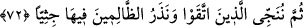
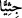

72. Sonra muttakîleri kurtarırız ve zâlimleri öylece diz üstü çökmüş olarak orada
bırakırız.
“Sonra muttakîleri kurtarırız.” Şirkten sakınanlara kurtuluş veririz, yani onları
cehennemden âzâd ederiz. Allah, burada cehenneme girmeyi, giren kimseye; kurtarmayı
ise kendi zatına yüklemiştir. Burada işâret var ki, hevâ cehennemine tabîat ayağıyla
giren herkes istese de istemese de eğer kendi tabîatı ile baş başa bırakılırsa ondan asla
kurtulamaz. Kurtulan ancak Allâh’ın kendisini kurtarmasıyla kurtulur.
Küfür ve isyanlarla kendilerine zulmeden “zâlimleri öylece diz üstü çökmüş olarak
orada” cehennemde “bırakırız.” terk ederiz. Bu ifâde, onların horlanmalarına ve
kurtulanlarla beraber cennete gitmekten alıkonulmalarına işârettir. Âyette geçen “”
kelimesi Celâleyn Tefsiri’nde “hepsi birden” diye açıklanmıştır.
Bilesin ki, Mûtezile mezhebi cehenneme girenin bir daha çıkamayacağını söyler.
Mürcie mezhebi, cehenneme mü’min kimsenin asla girmeyeceğini, âyetteki herkesin
oraya gitmesinden maksadın, yalnızca cehennemin gösterilmesi olup içine atılmak
olmadığını söyler. Ehl-i sünnetin görüşü ise şöyledir: Allâh’ın isyankâr mü’minleri bir
süre cehennemde cezalandırıp sonra çıkarması câizdir. Âlimler âyetlerde geçen
“vürûd” kelimesinin girmek anlamına geldiğini söyleyerek şu âyetleri delil
göstermişlerdir: “İşte onları ateşe soktu (getirdi).” (Hûd, 11/98); “Cehennemin
odunusunuz. Siz oraya gireceksiniz.” (el-Enbiya, 21/98) Ayrıca âyetin “Sonra
muttakîleri kurtarırız” ifâdesi de buna delildir. Çünkü kurtarma, ancak cehenneme
girdikten sonra olur. Nitekim şu âyet de bunu göstermektedir: “Biz de onun duâsını
kabul ettik ve onu tasadan kurtardık. İşte biz, inananları böyle kurtarırız.” (el-
Enbiya, 21/88)
Eğer “Allah: “Ama bizden kendilerine (ezelde) güzellik geçmiş (mutluluk takdir
edilmiş) olanlar, işte onlar, ondan (cehennemden) uzaklaştırılmışlardır. Onun
uğultusunu duymazlar.” (el-Enbiya, 21/101-102) buyurduğu halde mü’minler nasıl
cehenneme girer?” dersen, ‘Bu âyette kasdedilen, onların cehennem azâbından
uzaklaştırılmalarıdır.’ diye cevap veririm.
el-Es’iletü’l-mukhime’de şöyle der: “Mü’minlerin cehenneme girmeleri ve onun
uğultusunu işitmemeleri mümkündür. Çünkü Allah, cehennem ateşini onlara Hz.
İbrahim’e yaptığı gibi onlara serin ve selâmet kılar. Mü’minler cehenneme uğrarlar,
cehennem onlara serin ve selamet olur. Kâfirlere ise ateş olur. Nitekim aynı bardaktan
bir Kıptî içince kan, İsrailoğulları’ndan birisi içince tatlı su oluyordu.
Havas ilmini bilen bir mü’mini cehennemin ateşi yakmaz
Zira onun aydınlık nurundan dolayı cehennemin ateşi kalmaz
Bir hadîste de şöyle buyrulmuştur: “Cehennem der ki: Ey mü’min geç, senin nûrun